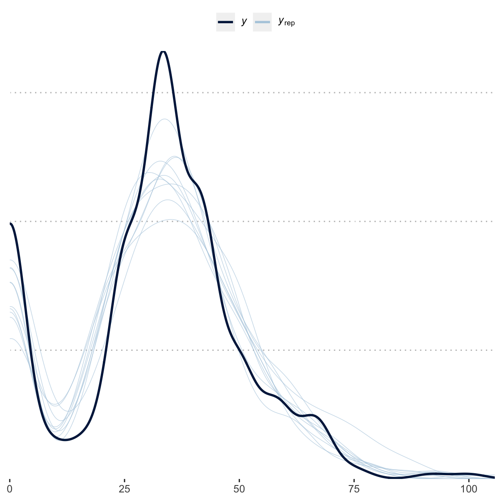

vignettes/g_analysis_art_class.Rmd
g_analysis_art_class.RmdThis vignette documents a simple visualisation and tabulation of the data gathered from surveying 21 journals and 300 articles in the field of plant pathology for their openness and reproducibility.
Load libraries used and setting the ggplot2 theme for the document.
library("brms") #> Loading required package: Rcpp #> Loading 'brms' package (version 2.13.3). Useful instructions #> can be found by typing help('brms'). A more detailed introduction #> to the package is available through vignette('brms_overview'). #> #> Attaching package: 'brms' #> The following object is masked from 'package:stats': #> #> ar library("bayestestR") library("bayesplot") #> This is bayesplot version 1.7.2 #> - Online documentation and vignettes at mc-stan.org/bayesplot #> - bayesplot theme set to bayesplot::theme_default() #> * Does _not_ affect other ggplot2 plots #> * See ?bayesplot_theme_set for details on theme setting library("ggplot2") library("ggpubr") library("pander") library("Reproducibility.in.Plant.Pathology") options(mc.cores = parallel::detectCores()) theme_set(theme_pubclean())
Data are imported and the base level is set to Molecular Plant Pathology, the journal with the highest five-year impact factor that will be used as the intercept in the following models.
rrpp <- import_notes() #> Parsed with column specification: #> cols( #> .default = col_character(), #> year = col_double(), #> contains_page = col_double(), #> repro_inst = col_double(), #> molecular = col_logical(), #> software_cite = col_double(), #> software_avail = col_double(), #> comp_mthds_avail = col_double(), #> data_avail = col_double(), #> address = col_logical(), #> annote = col_logical(), #> booktitle = col_logical(), #> chapter = col_logical(), #> crossref = col_logical(), #> edition = col_logical(), #> howpublished = col_logical(), #> institution = col_logical(), #> key = col_logical(), #> note = col_logical(), #> number = col_double(), #> organization = col_logical() #> # ... with 5 more columns #> ) #> See spec(...) for full column specifications. #> Parsed with column specification: #> cols( #> journal = col_character(), #> IF_2year = col_double(), #> IF_5year = col_double(), #> `Source: InCites Journal Citation Reports, Clarivate Analytics, 2018` = col_logical() #> )
All models are using the same priors. Because of the amount of zero values in the reproducibility_score a hurdle_gamma() family is used for all models as well.
Test the effect that the article’s class, applied or fundamental had on the reproducibility score. Here, art_class is a fixed effect, year and assignee are assigned as random effects.
m2 <- brm( formula = reproducibility_score ~ art_class + (1 | year) + (1 | assignee), data = rrpp, seed = 27, prior = priors, family = hurdle_gamma(), control = list(adapt_delta = 0.9999, max_treedepth = 15), iter = 3000, chains = 4 ) #> Compiling Stan program... #> Trying to compile a simple C file #> Running /Library/Frameworks/R.framework/Resources/bin/R CMD SHLIB foo.c #> clang -mmacosx-version-min=10.13 -I"/Library/Frameworks/R.framework/Resources/include" -DNDEBUG -I"/Library/Frameworks/R.framework/Versions/4.0/Resources/library/Rcpp/include/" -I"/Library/Frameworks/R.framework/Versions/4.0/Resources/library/RcppEigen/include/" -I"/Library/Frameworks/R.framework/Versions/4.0/Resources/library/RcppEigen/include/unsupported" -I"/Library/Frameworks/R.framework/Versions/4.0/Resources/library/BH/include" -I"/Library/Frameworks/R.framework/Versions/4.0/Resources/library/StanHeaders/include/src/" -I"/Library/Frameworks/R.framework/Versions/4.0/Resources/library/StanHeaders/include/" -I"/Library/Frameworks/R.framework/Versions/4.0/Resources/library/RcppParallel/include/" -I"/Library/Frameworks/R.framework/Versions/4.0/Resources/library/rstan/include" -DEIGEN_NO_DEBUG -DBOOST_DISABLE_ASSERTS -DBOOST_PENDING_INTEGER_LOG2_HPP -DSTAN_THREADS -DBOOST_NO_AUTO_PTR -include '/Library/Frameworks/R.framework/Versions/4.0/Resources/library/StanHeaders/include/stan/math/prim/mat/fun/Eigen.hpp' -D_REENTRANT -DRCPP_PARALLEL_USE_TBB=1 -I/usr/local/include -fPIC -Wall -g -O2 -c foo.c -o foo.o #> In file included from <built-in>:1: #> In file included from /Library/Frameworks/R.framework/Versions/4.0/Resources/library/StanHeaders/include/stan/math/prim/mat/fun/Eigen.hpp:13: #> In file included from /Library/Frameworks/R.framework/Versions/4.0/Resources/library/RcppEigen/include/Eigen/Dense:1: #> In file included from /Library/Frameworks/R.framework/Versions/4.0/Resources/library/RcppEigen/include/Eigen/Core:88: #> /Library/Frameworks/R.framework/Versions/4.0/Resources/library/RcppEigen/include/Eigen/src/Core/util/Macros.h:613:1: error: unknown type name 'namespace' #> namespace Eigen { #> ^ #> /Library/Frameworks/R.framework/Versions/4.0/Resources/library/RcppEigen/include/Eigen/src/Core/util/Macros.h:613:16: error: expected ';' after top level declarator #> namespace Eigen { #> ^ #> ; #> In file included from <built-in>:1: #> In file included from /Library/Frameworks/R.framework/Versions/4.0/Resources/library/StanHeaders/include/stan/math/prim/mat/fun/Eigen.hpp:13: #> In file included from /Library/Frameworks/R.framework/Versions/4.0/Resources/library/RcppEigen/include/Eigen/Dense:1: #> /Library/Frameworks/R.framework/Versions/4.0/Resources/library/RcppEigen/include/Eigen/Core:96:10: fatal error: 'complex' file not found #> #include <complex> #> ^~~~~~~~~ #> 3 errors generated. #> make: *** [foo.o] Error 1 #> Start sampling summary(m2) #> Family: hurdle_gamma #> Links: mu = log; shape = identity; hu = identity #> Formula: reproducibility_score ~ art_class + (1 | year) + (1 | assignee) #> Data: rrpp (Number of observations: 300) #> Samples: 4 chains, each with iter = 3000; warmup = 1500; thin = 1; #> total post-warmup samples = 6000 #> #> Group-Level Effects: #> ~assignee (Number of levels: 4) #> Estimate Est.Error l-95% CI u-95% CI Rhat Bulk_ESS Tail_ESS #> sd(Intercept) 0.21 0.20 0.04 0.74 1.00 1306 2041 #> #> ~year (Number of levels: 7) #> Estimate Est.Error l-95% CI u-95% CI Rhat Bulk_ESS Tail_ESS #> sd(Intercept) 0.11 0.07 0.02 0.26 1.00 1706 1692 #> #> Population-Level Effects: #> Estimate Est.Error l-95% CI u-95% CI Rhat Bulk_ESS #> Intercept 3.66 0.14 3.38 3.95 1.00 2233 #> art_classFundamental -0.03 0.05 -0.13 0.06 1.00 5786 #> Tail_ESS #> Intercept 2245 #> art_classFundamental 3522 #> #> Family Specific Parameters: #> Estimate Est.Error l-95% CI u-95% CI Rhat Bulk_ESS Tail_ESS #> shape 7.82 0.70 6.51 9.27 1.00 6260 4395 #> hu 0.18 0.02 0.14 0.22 1.00 5862 3984 #> #> Samples were drawn using sampling(NUTS). For each parameter, Bulk_ESS #> and Tail_ESS are effective sample size measures, and Rhat is the potential #> scale reduction factor on split chains (at convergence, Rhat = 1). plot(m2)
pp_check(m2) #> Using 10 posterior samples for ppc type 'dens_overlay' by default.

pander(equivalence_test(m2)) #> Registered S3 methods overwritten by 'lme4': #> method from #> cooks.distance.influence.merMod car #> influence.merMod car #> dfbeta.influence.merMod car #> dfbetas.influence.merMod car
| Parameter | CI | ROPE_low | ROPE_high | ROPE_Percentage |
|---|---|---|---|---|
| b_Intercept | 89 | -1.922 | 1.922 | 0 |
| b_art_classFundamental | 89 | -1.922 | 1.922 | 1 |
| ROPE_Equivalence | HDI_low | HDI_high | Effects | Component |
|---|---|---|---|---|
| Rejected | 3.458 | 3.856 | fixed | conditional |
| Accepted | -0.1061 | 0.04223 | fixed | conditional |
| Cleaned_Parameter |
|---|
| (Intercept) |
| art_classFundamental |